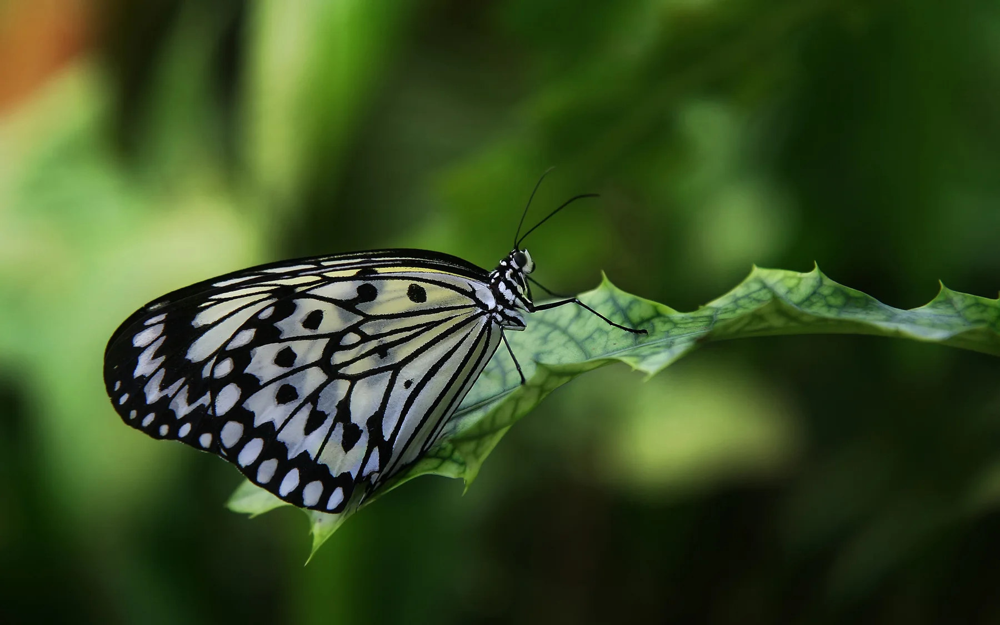
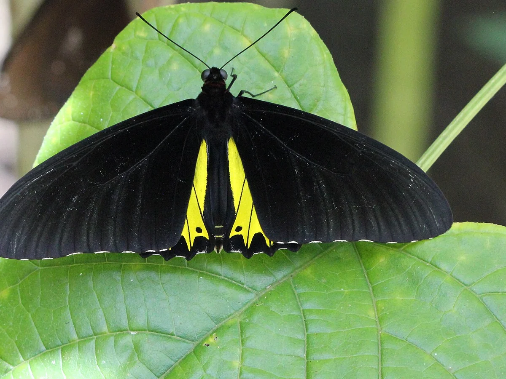
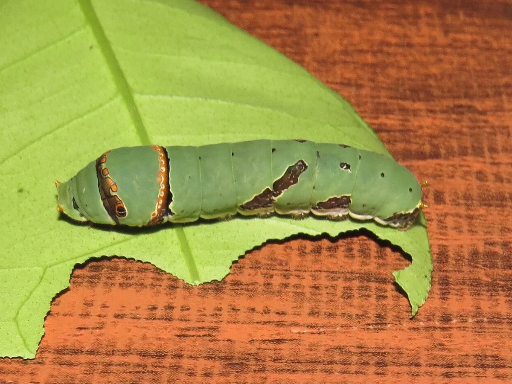
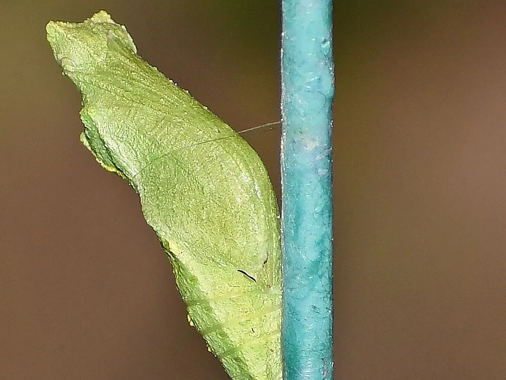

01
Papilio blumei
Kupu-kupu bersayap hijau metalik asal Sulawesi. Kilau warnanya lahir dari pantulan cahaya pada struktur sisik yang berlapis rapat.
Inang larva · jeruk dan kerabat Rutaceae
Kehadiran kupu-kupu menandakan lingkungan tempat kita tinggal masih sehat dan saling terhubung. Siklus hidupnya pun dapat kita baca layaknya kalender musim.
Dari satu organisme, terhubung ke seluruh ekosistem

Vitrin 02 · Biodiversitas
Biodiversitas mencakup keragaman kehidupan di setiap lapisannya, mulai dari variasi gen dalam satu populasi, kekayaan spesies di suatu tempat, hingga ragam ekosistem tempat semuanya bernaung.
Ketiga lapisan ini saling menopang. Populasi kupu-kupu yang memiliki keragaman genetik tinggi lebih mampu bertahan saat musim berubah. Keragaman itu baru terjaga kalau tanaman inangnya masih tumbuh subur, dan tanaman tersebut hanya bisa bertahan kalau ekosistemnya utuh.
Karena itu, ketika kupu-kupu mulai jarang terlihat di sekitar rumah, artinya ada satu simpul dari jaring kehidupan yang terlepas. Hilangnya satu simpul akan ikut menggoyahkan simpul lainnya.
Hubungan yang berjalan setiap hari
Vitrin 03 · Mengenal kupu-kupu
Kupu-kupu termasuk serangga bersayap sisik (Lepidoptera) yang kilau warnanya terbentuk dari ribuan sisik mikroskopis. Bentuk tubuhnya dirancang selaras dengan cara hidupnya di alam.
 1
2
3
4
5
6
7
8
1
2
3
4
5
6
7
8
Tiga spesies yang dapat dijumpai di Indonesia
01
Kupu-kupu bersayap hijau metalik asal Sulawesi. Kilau warnanya lahir dari pantulan cahaya pada struktur sisik yang berlapis rapat.
Inang larva · jeruk dan kerabat Rutaceae

02
Kupu-kupu raja yang termasuk salah satu spesies terbesar di nusantara. Sering terbang tinggi di tajuk pohon dan turun saat mencari nektar.
Inang larva · Aristolochia (sirih hutan)

03
Spesies yang paling akrab di kawasan perkotaan. Terbangnya gesit dan sering singgah sebentar di bunga pagar, taman kota, maupun pot teras rumah.
Inang larva · sirsak, kenanga, dan kerabat Annonaceae
Kebutuhan tanaman inang dapat berbeda menurut spesies dan kondisi daerah setempat, sehingga daftar di atas menjadi gambaran umum bagi pengamatan di lapangan.
Siklus hidup · pilih tahap

Tahap 01
Induk betina meletakkan telurnya satu per satu secara spesifik pada daun tanaman inang yang cocok bagi calon ulatnya. Permukaan telur berlapis lilin halus dengan bentuk menyerupai kuncup kecil. Dalam beberapa hari, warna cangkang akan menggelap sebagai tanda ulat siap menetas.

Tahap 02
Inilah fase paling aktif makan sekaligus paling rentan. Ulat memakan daun inang hampir sepanjang waktu dan berganti kulit beberapa kali seiring pertumbuhannya. Pada tahap ini pula ia menjadi incaran alami burung, semut, serta tawon parasit.

Tahap 03
Tubuh ulat mengeras menjadi kepompong dan menggantung dengan ikatan benang sutra. Dari luar ia tampak diam sepenuhnya, padahal di dalamnya seluruh jaringan tubuh sedang disusun ulang. Warna kepompong menyaru dengan daun atau ranting sekitar, sehingga ia membutuhkan semak yang tidak dipangkas habis.

Tahap 04
Begitu sayapnya mengembang sempurna, perannya pun berganti menjadi pengisap nektar dan pencari pasangan. Saat berpindah dari satu bunga ke bunga lain, tubuhnya turut membawa serbuk sari yang membantu penyerbukan berbagai tumbuhan di sekitar kita.
Vitrin 04 · Rumah kupu-kupu
Kupu-kupu membutuhkan empat elemen yang saling melengkapi, yakni daun inang bagi ulatnya, bunga nektar bagi kupu-kupu dewasa, keteduhan untuk berlindung, serta koridor hijau yang menyambungkan semuanya.
Halaman ini masih kosong. Aktifkan elemen di samping untuk mengisinya.
Simulasi habitat · empat elemen, semua mulai nonaktif
Tanpa tanaman inang, tidak ada daun untuk telur dan ulat. Generasi berikutnya berhenti di sini.
Tanpa bunga penghasil nektar, kupu-kupu dewasa kehabisan bahan bakar untuk terbang dan kawin.
Tanpa tajuk dan semak pelindung, kupu-kupu rentan terhadap terpaan angin, hujan, dan pemangsa.
Ruang hijau yang terpisah membuat kupu-kupu sulit berpindah di antara petak-petak habitat.
0 dari 4 elemen aktif
Keempat elemen ini saling mendukung, meski kebutuhan tiap spesies bisa berbeda. Simulasi ini dirancang sebagai model belajar untuk mengenali fungsi ruang hijau.
Saat dinyalakan, ilustrasi tanaman di latar halaman ikut tumbuh mengikuti empat sakelar di atas pada bagian ini.
Latar halaman tetap diam karena pengaturan perangkatmu meminta pengurangan gerak.
| Tanaman | Dipakai oleh | Yang dicari | Akibat jika hilang |
|---|---|---|---|
| Inang jeruk, Aristolochia |
Ulat | Daun sebagai sumber pakan | Induk kehilangan tempat bertelur sehingga siklus generasi terputus |
| Nektar Lantana, Ixora, Asystasia |
Kupu-kupu dewasa | Nektar manis sebagai sumber energi | Kupu-kupu dewasa kekurangan energi untuk terbang dan berkembang biak |
Menanam bunga saja belum cukup untuk menambah generasi baru, sedangkan menanam tanaman inang tanpa bunga nektar membuat kupu-kupu dewasa kekurangan energi. Keduanya perlu tumbuh dalam jarak terbang yang berdekatan.
Vitrin 05 · Ancaman
Berkurangnya kupu-kupu jarang dipicu oleh satu penyebab tunggal. Sering kali, beberapa perubahan kecil di lingkungan sekitar saling menumpuk di ruang yang sama.
Sebelum
Lima petak hijau saling tersambung sehingga populasi dapat berpindah dan bertukar gen.
Sesudah
Ketika dua petak penghubung hilang, petak yang tersisa terisolasi satu sama lain.
Vitrin 06 · Kuis
Kuis ini mengulas kembali konsep yang sering tertukar, seperti peran tanaman inang dan nektar, perbedaan telur dan kepompong, serta kaitan antarhabitat.
Tombol kirim aktif setelah kelima pertanyaan terjawab. Skor dan penjelasan muncul setelah itu.
Vitrin 07 · Ambil tindakan
Tak satu pun dari langkah ini membutuhkan lahan luas, izin rumit, atau biaya besar. Beberapa di antaranya justru cukup dengan tidak terlalu sering memangkas tanaman liar.
Komitmen ini menjadi catatan pribadimu. Pilihanmu disimpan di peramban perangkat ini saja sebagai pengingat langkah yang ingin kamu mulai, tanpa pelacakan dan tanpa sinkronisasi ke perangkat lain.
Tersimpan di peramban perangkat ini saja dan tidak disinkronkan ke perangkat lain.
Spider lily tidak ditampilkan karena pengaturan perangkatmu meminta pengurangan gerak.